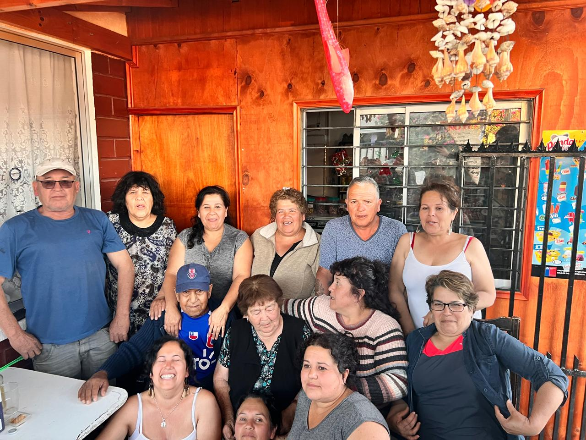

Bienvenidos a Nuestra Memoria Familiar
Esta página está dedicada a la memoria de nuestro querido abuelo, un apasionado seguidor de la Universidad de Chile. Aquí compartimos nuestros recuerdos y celebramos el legado que nos dejó.
